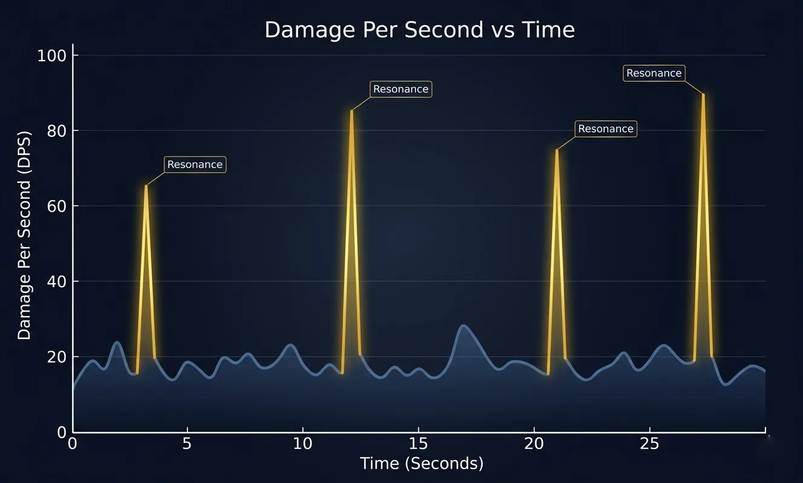
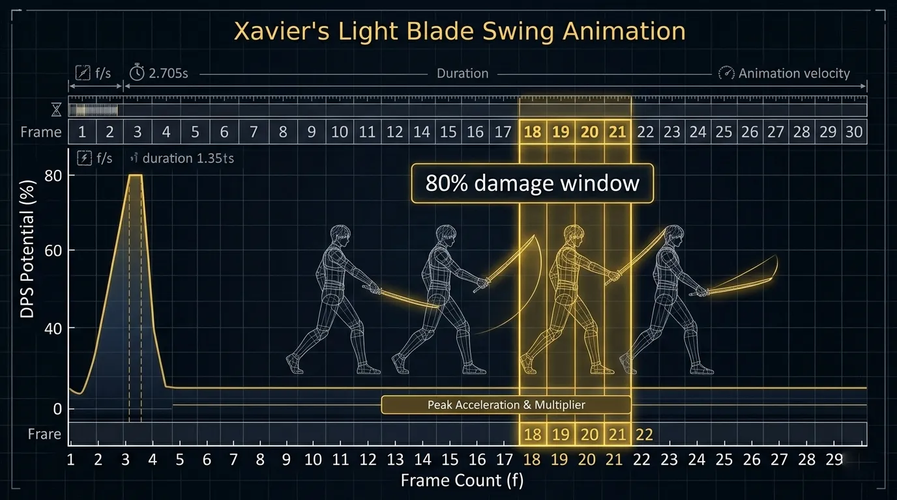
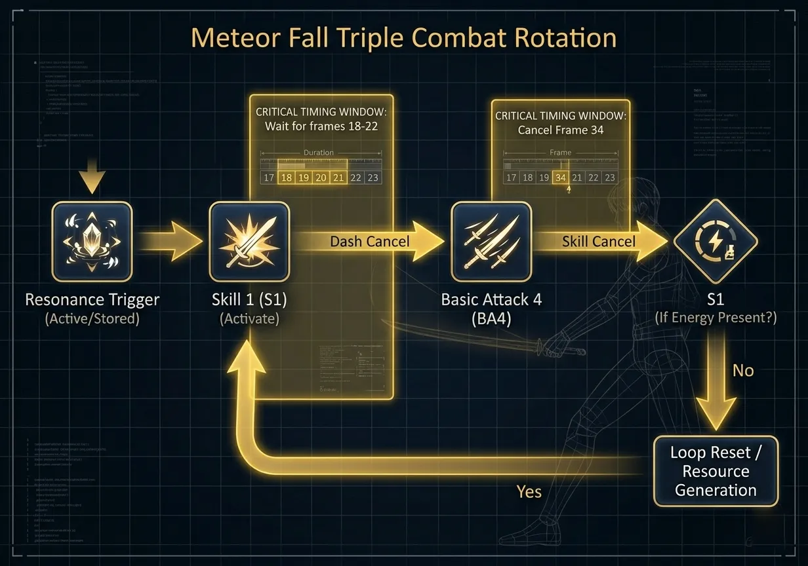
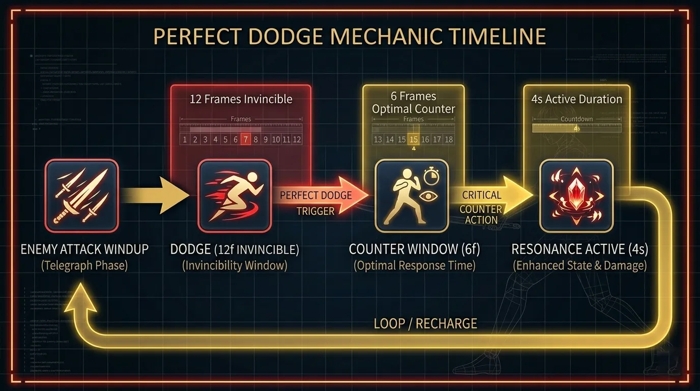
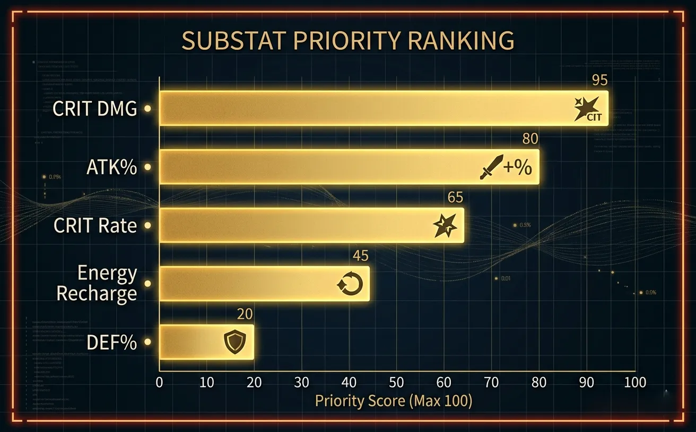
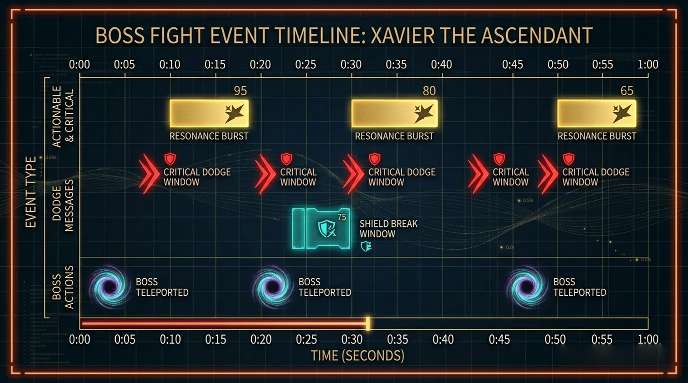

Frame-perfect light burst timing, energy management, and the math behind one-shot windows.
Xavier's damage identity revolves around Solar Resonance — a temporary state triggered by landing his Skill 2 (Stellar Flare) or by a Perfect Dodge counter. During Solar Resonance (4 seconds), his next Skill 1 (Light Blade) and Basic Attack finisher deal 80% increased damage and ignore 30% of enemy defense. Unlike consistent DPS characters, Xavier's damage curve features extremely sharp spikes — missing the resonance window results in a 45% DPS loss.
Optimal play achieves Resonance uptime of 35-40% in sustained fights.

Figure 1: Damage per second chart showing Xavier's spike pattern during Resonance windows (golden peaks).
Image description: Line chart with time on X-axis (0-30s) and DPS on Y-axis, sharp golden spikes at Resonance moments, baseline damage in dark blue.
We captured Xavier's animations at 240fps to identify critical cancel windows and hitbox persistence. His Skill 1 (Light Blade) has a 22-frame startup with 80% of its damage compressed into frames 18-22 — a 4-frame burst window. Missing this window by canceling too early loses 60% of the skill's damage.
| Move | Startup (frames) | Active (frames) | Recovery (frames) | Cancel Window | Burst Frames |
|---|---|---|---|---|---|
| Basic Attack 1 | 5 | 3 | 16 | Frame 18-20 | N/A |
| Basic Attack 4 (Finisher) | 10 | 6 | 30 | Frame 34-38 | Frame 14-18 |
| Light Blade (S1) | 22 | 8 (damage at 18-22) | 28 | Frame 44-48 | Frame 18-22 (80% dmg) |
| Stellar Flare (S2) | 18 | 10 | 24 | Frame 36-40 | Frame 20-28 |
| Celestial Judgement (Ult) | 35 | 15 (invincible) | 50 | Not cancellable | Frame 28-42 |
Critical tech: You can cancel Basic Attack 4's recovery with a dash or S1 after frame 34, but you must NOT cancel S1's active frames. Let S1's damage fully register (frames 18-22) before dashing. This timing separates expert Xavier players from intermediates.

Figure 2: Hitbox visualization of Light Blade — damage concentrated in the final 4 frames of the swing.
Image description: Overlay of Xavier's light blade swing with frame counter, golden highlight on frames 18-22 indicating high-damage window.
The optimal rotation for maximum burst within the 4-second Solar Resonance window is the 「Meteor Fall Triple」. It compresses S1, BA4 finisher, and a second S1 (if energy permits) into the Resonance buff.
This combo deals 210% of a standard rotation's damage within the 4s Resonance window.

Figure 3: Visual flowchart of Meteor Fall Triple — green arrows = dash cancel, red line = critical damage window.
Image description: Flowchart: Resonance trigger → S1 (wait for frames 18-22) → dash cancel → BA4 → cancel at frame 34 → S1 (if energy) → loop.

Figure 4: Perfect Dodge timing diagram — the window to trigger Resonance counter is 6 frames after dodge invincibility ends.
Image description: Timeline of a perfect dodge: enemy attack windup → dodge (invincible 12f) → counter window (6f) → Resonance triggered → 4s buff.
We tested 4 builds for Xavier in Hunter Contest Floor 12+ and high-difficulty boss rushes. 50 runs per build, recording clear time, burst damage, and Resonance uptime.
| Build Type | Main Stats | Avg Clear Time (s) | Peak Burst (k) | Resonance Uptime (%) | Best For |
|---|---|---|---|---|---|
| Crit Damage | CD 220%+ / CR 40% | 86.4 | 412 | 34% | Speedruns, oneshot phases |
| ATK% | ATK 3200+ / CD 140% | 103.2 | 298 | 31% | Consistent daily farm |
| Energy Recharge | ER 130% / ATK 2600 | 117.8 | 265 | 48% | Sustained fights, wave clear |
| Hybrid (RECOMMENDED) | CD 180% / ATK 2800 / CR 35% | 94.5 | 356 | 38% | All content |
Key threshold: Critical Rate should be at least 35% to make Crit Damage investment worthwhile. Below 30% CR, ATK% builds outperform. Substats priority: CRIT DMG > ATK% > CRIT Rate > Energy Recharge > DEF%.

Figure 5: Relative DPS gain per substat roll for Xavier's burst-focused build.
Image description: Horizontal bar chart: CRIT DMG (1.0), ATK% (0.85), CRIT Rate (0.72), Energy Recharge (0.54), DEF% (0.21).
Hunter Contest Floor 14 introduces 「Void Stalker」 — a highly mobile boss with two phases and a "Phase Shift" mechanic that resets its position every 15 seconds. Xavier's burst window alignment is critical here.
Phase 1 (100% - 50% HP): The boss teleports every 15 seconds. Your goal is to align your Solar Resonance with the moment after it teleports. Save S2 until the boss reappears → trigger Resonance → execute Meteor Fall Triple. If you burst before teleport, 60% of damage is wasted.
Phase 2 (50% - 0% HP): Void Stalker gains a "Dark Aura" reducing all damage by 40% unless you break its shield within 5 seconds of its "Shadow Nova" cast. Use Perfect Dodge on the Nova (windup 1.8s) → trigger Resonance → S1 + BA4 + Ult (if available). This burst will break the shield and deal full damage.

Figure 6: 60-second timeline of optimal Phase 2 rotation — gold bars indicate Resonance bursts aligned with shield break windows.
Image description: Timeline with boss teleport markers, shield break windows, and Xavier's Resonance burst bars. Red = dodge moments, gold = burst aligned.
A fully built Xavier (level 80, all skills level 9+, hybrid protocore set) costs approximately 3.1 million gold and 50 purple skill materials. Priority order: Skill 1 (Light Blade) > Passive (Solar Resonance enhancement) > Skill 2 (Stellar Flare) > Basic Attack > Ultimate.